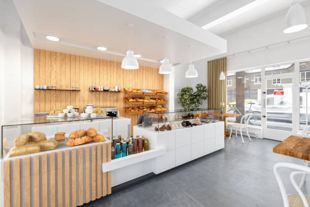
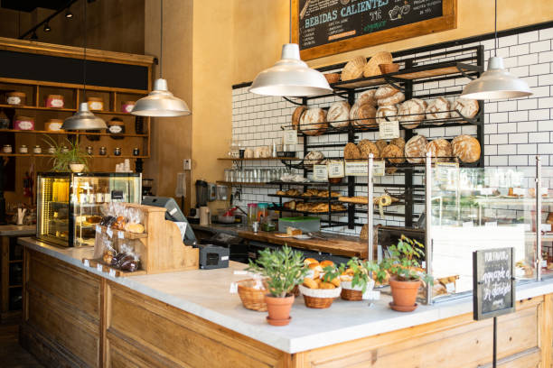

Sprinkle and Sweets Bread Shop - Taman Universiti
Address
1, Jalan Kebudayaan 2, Taman Universiti, 81300 Johor Bahru, Johor, Malaysia
Contact
+60 7-123 4567
Opening Hours
Monday - Friday: 9:00 AM - 6:00 PM
Saturday: 10:00 AM - 4:00 PM
Sunday: Closed
Getting Here
- By Bus: Routes 1A, 2B stop at SK Taman Universiti 4
- By Car: Free parking available
- By Taxi: Show "Taman Universiti Food Court" as landmark

Nearby Attractions
UTM Campus
5 min drive - Explore Malaysia's premier technological university
Taman Universiti Park
10 min walk - Perfect for a post-bakery stroll
Paradigm Mall
10 min drive - Shopping, dining, and entertainment
Local Market
5 min walk - Experience local culture and cuisine
Sprinkle and Sweets Bread Shop - JB CITY SQUARE
Address
Lot MB 08 & 09, Level B1, JB City Square. 106-108 Jalan Wong Ah Fook, 80000 Johor Bahru, Johor.
Contact
+60 7-123 4567
Opening Hours
Monday - Friday: 9:00 AM - 6:00 PM
Saturday: 10:00 AM - 4:00 PM
Sunday: Closed
Getting Here
- By Bus: Several bus routes stop at JB Sentral, which is a short walk from City Square.
- By Car: Parking is available in the City Square mall parking lot.
- By Train: Take the KTM train to JB Sentral, then walk to City Square.
- By Taxi: Ask the driver to drop you off at JB City Square.

Nearby Attractions
Johor Bahru Old Chinese Temple
5-minute walk - Visit this historic temple complex dating back to 1870.
JB City Square Park
10-minute walk - A nice spot for a relaxing stroll after visiting the bakery.
Komtar JBCC
5-minute walk - Another mall nearby with shopping, dining, and entertainment options.
Jalan Tan Hiok Nee Heritage Walk
10-minute walk - Explore the cultural and historical street of Johor Bahru.
Sprinkle and Sweets Bread Shop - SETIA INDAH
Address
22, Jalan Setia 3/7, Taman Setia Indah, 81100 Johor Bahru, Johor.
Contact
+60 7-123 4567
Opening Hours
Monday - Friday: 9:00 AM - 6:00 PM
Saturday: 10:00 AM - 4:00 PM
Sunday: Closed
Getting Here
- By Bus: Take bus routes P211 or P411 to Taman Setia Indah. The shop is a 5-minute walk from the bus stop.
- By Car: Easily accessible via Jalan Setia 3. Free parking available in front of the shop.
- By Grab/Taxi: Ask the driver to drop you off at Sprinkle and Sweets, Taman Setia Indah.

Nearby Attractions
Setia Indah Mall
5-minute walk - A convenient shopping center with various retail outlets and eateries.
Setia Indah Park
10-minute walk - Perfect for a leisurely stroll or morning exercise.
Setia Indah Food Court
7-minute walk - Try local delicacies at affordable prices.
Masjid Setia Indah
8-minute walk - Beautiful local mosque serving the community.